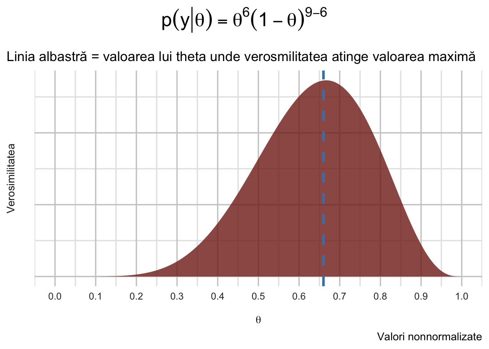
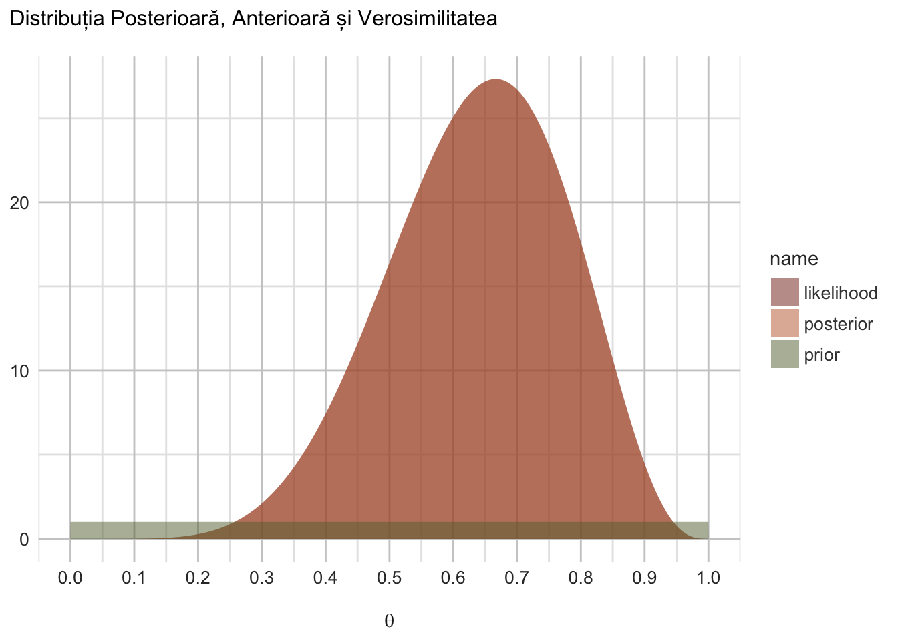
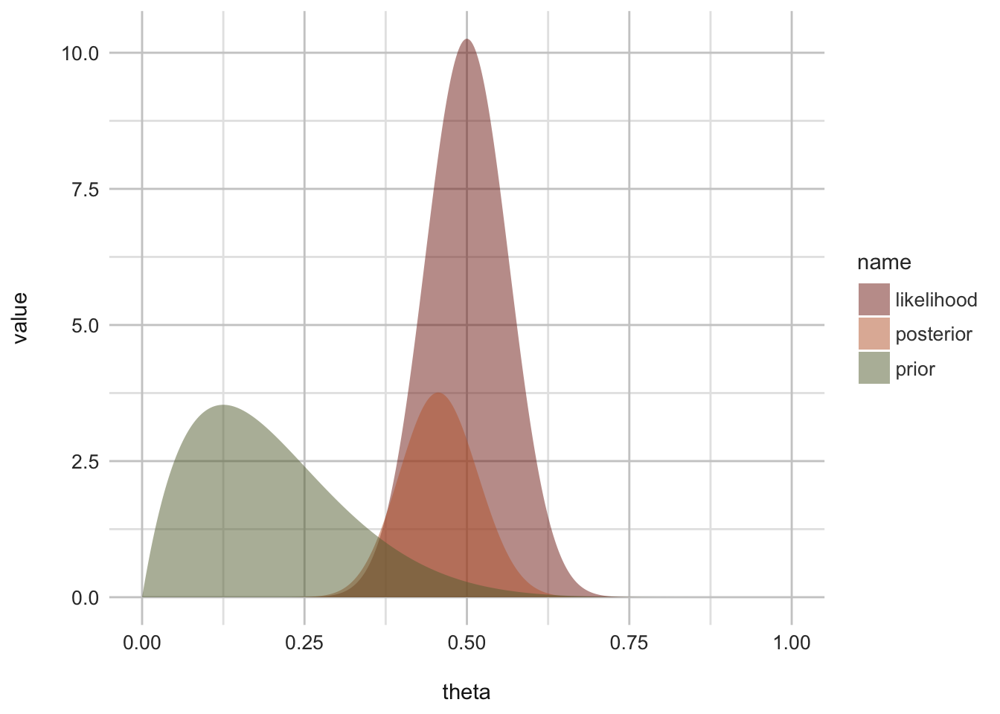
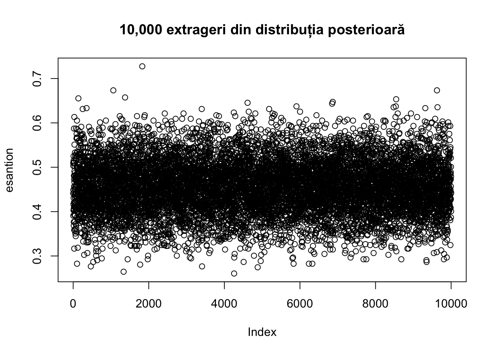
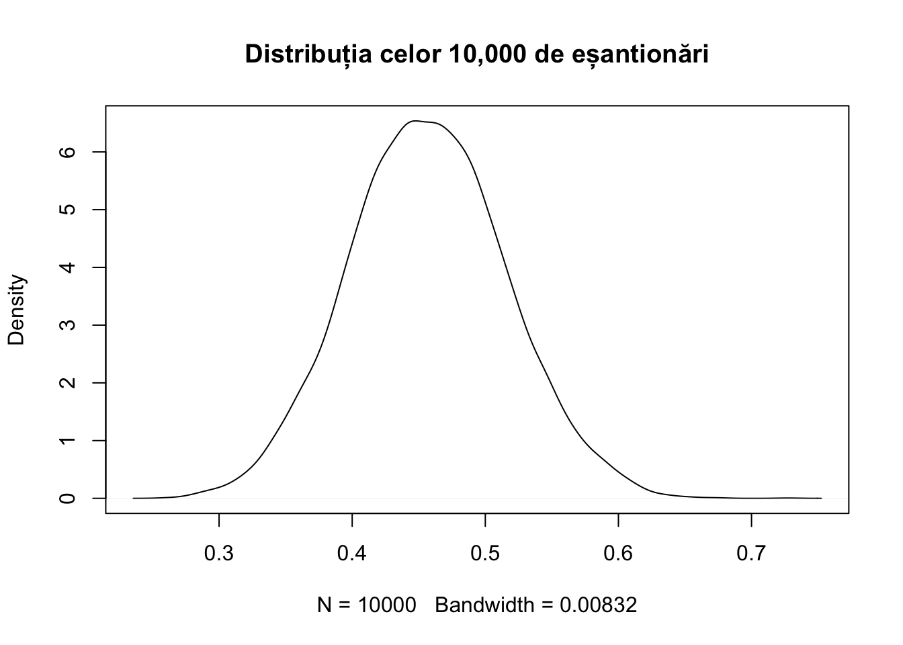
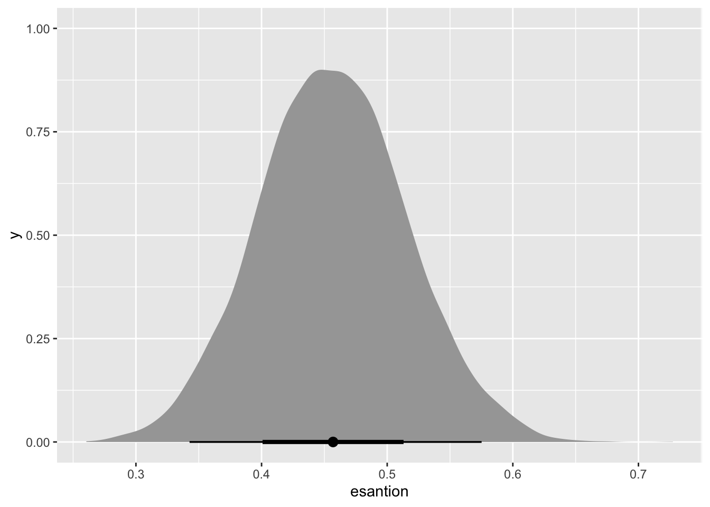

Inferența Bayesiană
Elementele fundamentale: Modelul Beta-Binomial
Care este ideea?
Probabilitatea binomiala este de fapt estimarea prevalenței - sau proporției, unui eveniment binar dintr-o serie de încercări de tip \(Bernoulli\). Altfel spus, se referă la proporția unui succes din multiple încercări ce generează reușite sau eșecuri.
Cel mai des exemplu este de acum celebrul aruncat al monedei (în încercarea de a estima probabilitatea raportului de cap/pajură) dar el poate fi extrem de variat. McElreath folosește în acest scop proporția pământului in raport cu apa de pe Glob, dintr-o serie de date (\(P(ământ)/A(pă)\)) rezultate din experimentul descris la pagina 28.
Probabilitatea binomială este elegantă si foarte potrivită pentru a învăța inferența Bayesiană pentru că este ușoară (avem un singur parametru de estimat si pentru că cele două distribuții despre care vom vorbi mai încolo fac parte din aceeași familie, i.e., sunt \(conjugate\)).
Problema (McElreath, 2020)
Să presupunem că aveți un glob care reprezintă Pământul. Această versiune a lumii este suficient de mică pentru a o ține în mână. Sunteți curioși să aflați cât de mult din suprafață este acoperită de apă. Adoptați următoarea strategie: Veți arunca globul în aer. Când îl prindeți, veți nota dacă suprafața de sub degetul arătător drept este sau nu apă sau pământ. Apoi aruncați din nou globul în aer și repetați procedura. Această strategie generează o secvență de eșantioane de suprafață de pe glob. (p.28)

Presupunând că se avem 9 aruncări, din care 6 ne dau informația “Apă”:
Date fiind aceste date, care este proporția pamântului, i.e., \(p(pamânt|date)\).
Teorema lui Bayes
Finalitatea procesului de învățare Bayesian este probabilitatea posterioară, pe care o notăm ca \(p(θ|y)\). Dintr-o perspectivă epistemologică, probabilitatea posterioară conține tot ceea ce este de știut despre o propoziție incertă (cum ar fi o ipoteză științifică sau valorile parametrilor). Pe scurt, theta (\(θ\)) este parametrul nostru de interes, și ceea ce căutăm noi.
Theta (\(θ\)), rezultă din combinația dintre informațiile obținute din datele \(y\) (observațiile noastre) și informațiile noastre anterioare (ceea ce știm deja despre \(θ\)). Dacă ați parcurs textul deja, atunci ați întâlnit deja teorema lui Bayes, cu toate că notația este ușor diferită. Dar într-o formă sau alta, ea este:
\[ p(\theta|y)=\frac{p(y|\theta)p(\theta)}{p(y)} \]
unde
\(θ\) adică \((p(θ|y)\) este probabilitatea posterioară; \(p(y|θ)\) este procesul de generare a datelor, denumit de obicei verosimilitate sau likelihood; \(p(θ)\) este probabilitatea anterioară a lui \(θ\); și \(p(y)\) este o constantă de normalizare. Nu ne vom preocupa chiar acum de constanta de normalizare, \(p(y)\), deoarece aceasta nu ne afectează concluziile. Ea este acolo doar pentru a transforma verosimilitatea - obținută din înmulțirea \(p(y|\theta)p(\theta)\) - în probabilități (adică valori ce sumate ajung la 1).
Prin urmare:
\[ p(\theta|y)=p(y|\theta)p(\theta) \]
Ceea ce este important de înțeles este că \(θ\) este un parametru necunoscut, dar pentru a estima incertitudinea noastră cu privire la \(θ\), vom încerca diferite valori ale lui.
De exemplu, dorim să cunoaștem proporția de pamânt, care variază de la 0 la 1 (cu 0 înseamnă că nu există pamânt deloc; 1 înseamnă că există numai pamânt). Astfel, în ecuația noastră, \(θ\) ar reprezenta toate valorile cuprinse între 0 și 1. Cu toate acestea, există o infinitate de valori cuprinse între 0 și 1, astfel încât, în practică, am putea doar încerca valori cuprinse între 0 și 1.
McElreath utilizează un proces relativ simplu numit aproximare prin grilă, în care vom folosi o grilă de valori cuprinse între 0 și 1, la distanță egală, pentru \(θ\).
Acest proces de aproximare funcționează perfect pentru cazuri de acest gen, dar pe măsură ce vom înainta în material generarea lui \(θ\) devine imposibilă prin acest procedeu, și vom recurge la procedee mai complexe cum ar fi Markov-Chain Monte-Carlo.
Componentele unui model Bayesian
Likelihood (Verosimilitatea)
Verosimilitatea (în acest caz, verosimilitatea binomială a) datelor este un concept destul de greu de înțeles la “prima strigare”. Verosimilitatea se referă la “cât de probabile sunt datele, având în vedere o anumită valoare pentru \(θ\)”. Dacă vreți o explicație pe îndelete, vă recomand acest mic videoclip.
Oricum, pentru varianta binomială verosimilitatea are această structură:
\[p(y|\theta)=\theta^y(1-\theta)^{n-y}\]unde
\(y\) este de numărul de reușite (Pământ, în cazul nostru) și \(n\) este numărul de încercări.
Pentru exemplul din McElreath, unde avem 6 reușite din 9 încercări, calculăm \(p(y|\theta)\) pentru toate valorile \(theta\) de la 0 la 1 și le reprezentăm grafic.
\[p(y|\theta)=\theta^6(1-\theta)^{9-6}\]
Acum, am putea să le calculăm de mână, pentru că nu sunt multe, dar putem să le și obținem prin funcția R dbinom(). Iată codul:
# Defineste spatiul de probabilitati (de la 0 la 1)
# Pentru 20 de valori posible ale lui theta
theta <- seq(from=0, to=1, length.out=1000)
# Calculeaza verosimilitata cu functia dbinom()
# Pentru 6 reușite din 9 încercări, cu
# prob = adica probabilitatea de a obține reușita
# care provine din vectorul theta.
# Pentru o probabilitate theta de .10, dbinom(6,9, prob = .10)
likelihood <- dbinom(6, size=9, prob=theta)
# Sa le lipim intr-un singur dataframe pentru plot
df <- data.frame(theta, likelihood)
# Iată și graficul
ggplot(df, aes(x = theta, y = likelihood)) +
geom_area(alpha = .8, fill = met.brewer("Tiepolo", 1)) +
labs(x = TeX("$\\theta$"),
y = "Verosimilitatea",
title = TeX("$p(y|\\theta) = \\theta^{6}(1 - \\theta)^{9 - 6}$"),
subtitle = "Linia albastră = valoarea lui theta unde verosmilitatea atinge valoarea maximă",
caption = "Valori nonnormalizate") +
geom_vline(xintercept = .66, size = 1.25, color = "steelblue", linetype = 2) +
scale_x_continuous(breaks = seq(0, 1, by = .10)) +
see::theme_radar(base_size = 14) +
theme(axis.text.y = element_blank(),
plot.title = element_text(hjust = .5, size = 20))Warning: Using `size` aesthetic for lines was deprecated in ggplot2 3.4.0.
ℹ Please use `linewidth` instead.
Incorporarea de informații anterioare (Probabilitate apriori)
Pentru că facem inferență de tip Bayesian, avem oportunitatea de a incorpora informații anterioare în modelul nostru. \(p(θ)\) din teorema lui Bayes, este probabilitatea anterioară a lui \(θ\) și poate reprezenta date anterioare sau chiar cunoștințe subiective despre valoarea probabilă și incertitudinea lui \(θ\). McElreath pornește de la o distribuție uniformă de tip \(beta(1,1)\), adică el consideră ca fiecare valoare posibilă a lui \(θ\) are o probabilitate anterioara de 1, ele fiind egale, adică toate \(θ\) sunt la fel de probabile.
O abordare obișnuită atunci când se alege priorul este identificarea unui prior conjugat: o formulă de exprimare a priorului care are o structură de date similară cu cea a verosimilității. În acest caz, un prior conjugat pentru verosimilitatea binomială este funcția beta:
\[\text{beta}(a,b)=\theta^{a-1}(1-\theta)^{b-1}\]
unde \(a\) poate reprezenta reușitele, iar \(b\) poate reprezenta eșecurile.
Observați similitudinea dintre formulele pentru funcțiile binomială și beta. Acestea au structuri de date identice, ceea ce face ca beta să fie un prior conjugat pentru verosimilitatea binomială. Să folosim un beta(1,1) ca a priori, reprezentând cunoștințele noastre despre o probabilitate egală a lui \(theta\).
Codul generativ pentru un prior uniform
Pentru a genera 20 de valori de 1 (pentru egalitate), folosim funcția rep() sau dbeta().
# Defineste probabilitatea anterioara (prior)
# Fiecare probabilitate anterioara va primi valoarea 1
# Varianta rustică
prior <- rep(1,1000)
# Varianta urbană
# Beta distribution (1,1)
# Cei doi parametri, alpha (shape1) si beta(shape2) controleaza forma distributiei de tip beta
prior.beta <- dbeta(theta, shape1 = 1, shape2 = 1)Distribția Posterioară (în sfârșit!)
Probabilitatea posterioară, \(p(θ|y)\) ia în considerare verosimilitatea și credințele noastre anterioare. Aceasta este adesea privită ca un compromis între verosimilitatea datelor și probabilitatea anterioară. Acest lucru este mai ușor de înțeles din punct de vedere grafic:
# înmulțește probabilitatea binomială cu 100 pentru a o exprima în "termeni de probabilitate" ca și beta.
# practic rescriem obiectul anterior
likelihood <- dbinom(x = 6, size = 9, prob = theta)*100
# Teorema lui Bayes, normalizata
posterior <- likelihood * prior.beta# Să creăm un nou dataframe, care să cuprindă toate obiectele noastre create anterior.
df <- data.frame(theta = theta,
likelihood = likelihood,
prior = prior.beta,
posterior = posterior)
# Folosiți pivot_longer pentru a crea o variabilă care să grupeze likelihood vs. prior vs. posterior
# Pivot_longer
data_long <- pivot_longer(df, cols = c(likelihood, prior, posterior))Și acum, reprezentarea grafică:
data_long %>%
ggplot(aes(x = theta, y = value, fill = name)) +
geom_area(position = position_identity(), alpha = .5)+
labs(x = TeX("$\\theta$"),
y = NULL,
color = NULL,
title = "Distribuția Posterioară, Anterioară și Verosimilitatea")+
scale_x_continuous(breaks = seq(0, 1, by = .10)) +
scale_fill_manual(values=met.brewer("Tiepolo", 3)) +
see::theme_radar()
Observați că distribuția posterioară nu se observă în acest grafic. De ce?
Refaceți calculul cu o altă informație anterioară.
Imaginați-vă că aveți informații potrivit cărora probabiliatea de a vedea pamant la fiecare extragere ar fi de 20%. Acum dorim să încorporăm aceste informații anterioare în modelul nostru. \(p(θ)\) este probabilitatea anterioară a lui \(θ\) și poate reprezenta date anterioare sau chiar cunoștințe subiective despre valoarea probabilă și incertitudinea lui \(θ\).
\[beta(2,8)\]
Mai mult, acum aveți resursele financiare de a vă deplasa pe glob și culege mai multe observații, să spunem 60 din care 30 au reieșit valoarea \(P\). Faceți acest calcul pentru 500 de valori ale parametrului căutat \(theta\).
theta <- seq(from = 0, to = 1, length.out = 500)
prior.2.8 <- dbeta(theta, shape1 = 2, shape2 = 8)
likelihood <- dbinom(30, 60, prob = theta)*100
posterior <- likelihood * prior.2.8
exercitiu <- data.frame(theta = theta,
prior = prior.2.8,
likelihood = likelihood,
posterior = posterior)
data_long.exercitiu <- pivot_longer(exercitiu, cols = c(likelihood,
prior,
posterior))
data_long.exercitiu %>%
ggplot(aes(x = theta, y = value, group = name, fill = name)) +
geom_area(position = position_identity(), alpha = .5)+
scale_fill_manual(values=met.brewer("Tiepolo", 3)) +
see::theme_radar()
Analiza grafică
Graficul de mai sus prezintă distribuția posterioară, verosimilitatea și priorul unul lângă altul. Observați cum priorul conține mai puțină certitudine decât verosimilitatea. Densitatea posterioară este pur și simplu probabilitatea anterioară înmulțită cu verosimilitatea, astfel încât conține informații din ambele surse. Este o regulă generală că, în cazurile în care există o mulțime de date, iar priorul nostru este în mare parte neinformativ, verosimilitatea (likelihood) va copleși priorul.
Animație

Inferențe
Dacă ar fi să extindem acest lucru mai departe pentru a trage concluzii reale cu privire la incertitudinea noastră privind proporția de aur din dealuri, ar trebui să extragem eșantioane aleatorii din distribuția posterioară și să generăm estimări de interval pe baza acestor extrageri.
Lucrul cu distribuția posterioară
Acum avem un o distribuție posterioară! De obicei, nu o putem folosi doar pe ea. Trebuie să calculăm media oricărei inferențe pe întreaga distribuție. Acest lucru necesită calcul infinitezimal, care este (1) dificil și (2) adesea imposibil.
Așa că, în schimb, putem folosi eșantioane din distribuție și așa putem face inferențe pe baza acestora.
# extrage esantioane din grila creata anterior
esantion <- sample(theta,
prob = posterior,
size = 10000,
replace = TRUE)
plot(esantion, main = "10,000 extrageri din distribuția posterioară")

Odată ce am extras destule eșantioane din grila creată, putem începe să facem inferențe prin sumarizarea acestora.
De exemplu, putem calcula media acestui eșantion.
mean(esantion)[1] 0.456724Sau, mediana și abaterea standard.
Din fericire, avem funcții gata create pentru aceste sarcini, ca de exemplu describe_posterior() din pachetul bayestestR.
library(bayestestR)
describe_posterior(esantion,
centrality = "all",
rope_range = c(.70, .80))Summary of Posterior Distribution
Parameter | Median | Mean | MAP | 95% CI | pd | ROPE | % in ROPE
---------------------------------------------------------------------------------
Posterior | 0.46 | 0.46 | 0.45 | [0.34, 0.58] | 100% | [0.70, 0.80] | 0%În cadrul inferenței Bayesiene, parametrii sunt estimați în mod probabilistic ca distribuții. Aceste distribuții pot fi rezumate și descrise prin raportarea a patru tipuri de indici:
- Centralitate: media, mediana sau modul.
- Incertitudine: HDI sau CI
- Existența efecului: pd (probabilitatea direcției)
- Semnificația efectului: de ex. ROPE.
Pe măsură ce veți primi mai multă încredere, aceste moduri de a cuantifica incertitudinea vă vor părea din ce în ce mai naturale.
De asemenea, aveți posibiliatea reprezentărilor grafice mai avansate din pachete precum ggdist().
library(ggdist)
esantion.data.frame = as.data.frame(esantion)
esantion.data.frame %>%
ggplot(aes(x = esantion))+
stat_halfeye()